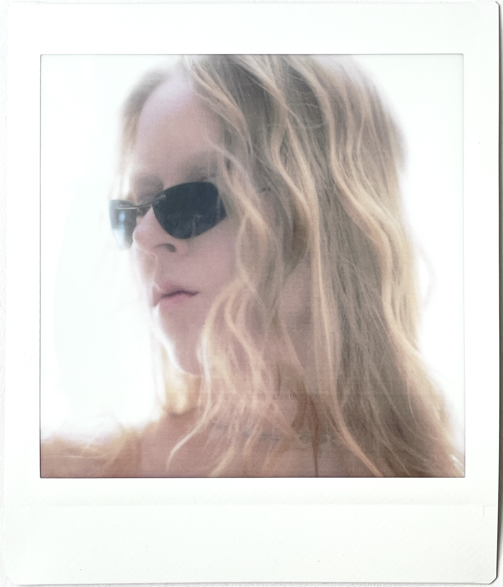

Contact
elainemeisner@online.de
+49 176 99113914
Instagram
Based in NRW (Germany), available worldwide
Elaine Meisner is a photographer based in Dortmund/ NRW, Germany, with German-Canadian roots. In 2025, she completed her bachelor's degree in photography at Dortmund University of Applied Sciences and Arts and is currently enrolled as a master's student.
In her photographic practice, she works with elements such as grain, blur, fog, and direct flash. Her photography is raw and authentic. By alternating between distance and closeness, her images create a tension. Rather than producing isolated, polished images, she constructs narratives that often embody the atmosphere of the night.
Education
2025 Bachelor of Arts in Photography, FH Dortmund
Publications
2025 Self-published book "Afterglow"
2024 "Crystal Ice" Penida Magazine
2024 "Crystal Ice" Dreamer Magazine
2023 "Your free trial has come to an end" Photobook Dummy Award, Shortlist
2023 Self-published book "Your free trial has come to an end"
2023 Self-published book "because you weren't here"
Exhibitions
2025 "Your free trial has come to an end."
Hans A, Dortmund, To Create Something New,
Ouroboros group exhibition
2024 "Red, like the lipstick I left on your lips" (Zine)
Anna Leonowens Gallery Halifax, Of the Flesh
Photography group exhibition
